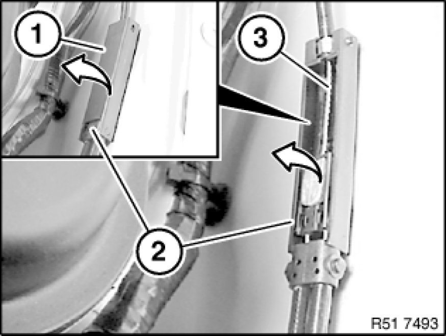

Removing and Installing/Replacing Cable for Front Engine Hood Locks (To Locks)
51 23 212 - Removing and installing/replacing cable for front engine hood locks (to locks)

Special tools required:
- 00 9 317 00 9 317 Trim Panel Wedge

Necessary preliminary tasks:
- Remove engine hood locks on left and right

Lever out cover (1) from clutch (2) in direction of arrow and remove.
Lever out Bowden cable (3) in direction of arrow.
Unclip cable for engine hood locks (1) with special tool 00 9 317 00 9 317 Trim Panel Wedge in direction of arrow and feed out of front panel.
Installation:
Catches (1 and 2) on cable for engine hood locks (3) must not be damaged.